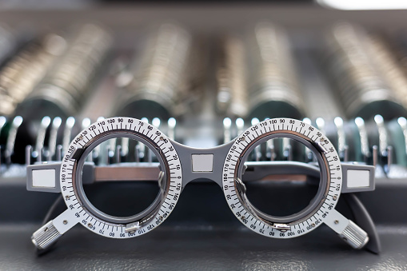
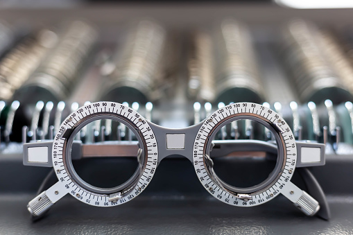

Nuestro Servicio
1Examenes para la vista
El examen de la vista, o examen oftalmológico, sirve para evaluar la capacidad visual y la salud ocular, permitiéndote identificar cambios que pueden causar o ser señal de problemas o enfermedades de la visión, como el glaucoma o la retinopatía diabética.
2Lentes de contacto
Los lentes de contacto son discos delgados y transparentes de plástico que se usan en el ojo para mejorar la visión. Los lentes de contacto flotan sobre la película lagrimal que cubre la córnea. Al igual que los anteojos, los lentes de contacto corrigen los problemas de visión causados por errores refractivos.
3Gafas de sol
Unas gafas de sol (o lentes oscuros) son unas gafas a menudo coloreadas u oscurecidas para proteger a los ojos de la luz directa y molesta. Las monturas de las gafas de sol generalmente están fabricadas con metal o con un material sintético, como el plástico o el nylon.
Galeria
 

Expertos en
Examenes para la vista
Lentes de contacto